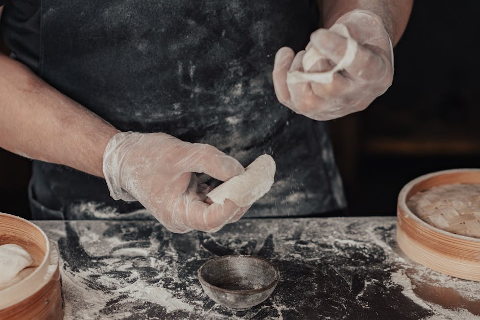
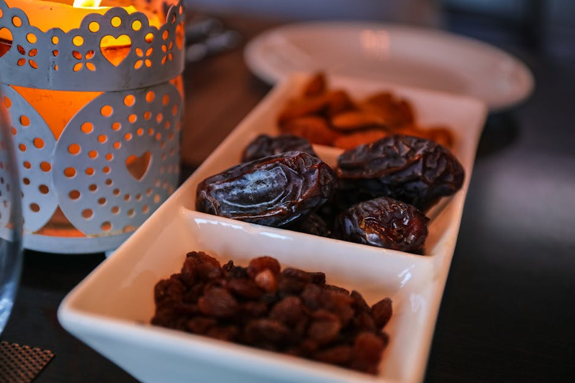
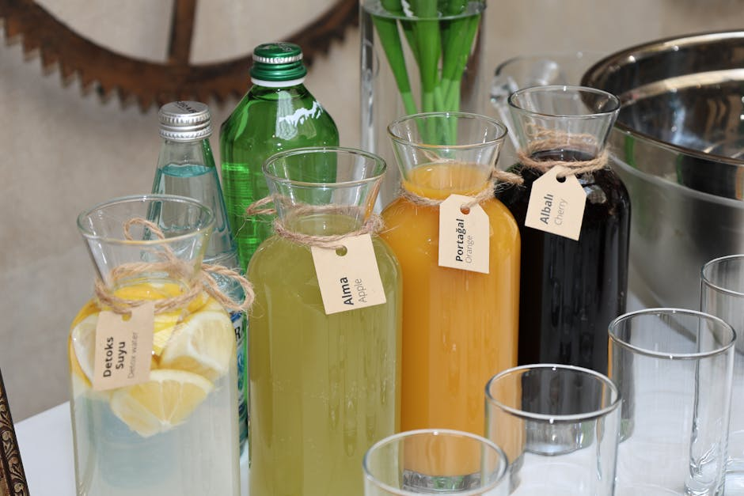
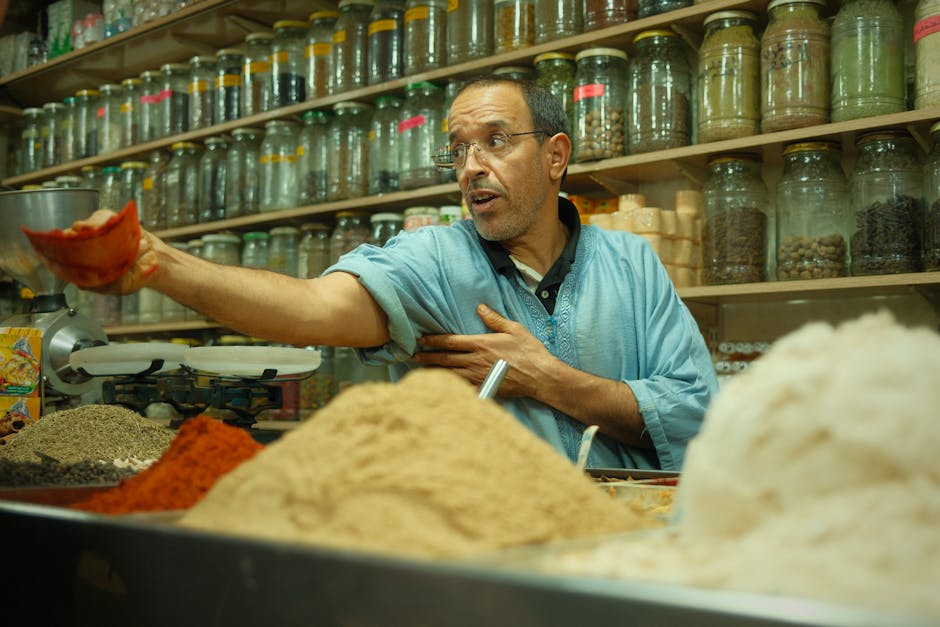
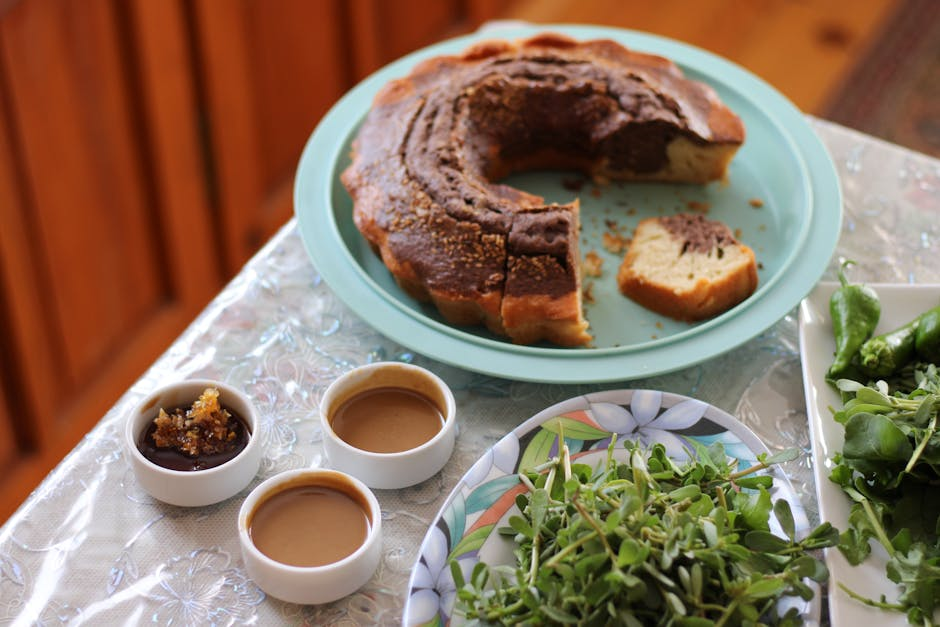

Cornes de gazelle: la receta de la abuela de Amina paso a paso
El pastelito más emblemático de Marruecos explicado con detalle. Masa, relleno de almendra y ese toque de agua de azahar que lo hace único.
Leer más →Historias de Marruecos, secretos de pastelería y recetas que nuestras abuelas nos contaban al oído.

En Marruecos ofrecer té es abrir las puertas de tu casa y de tu corazón. Te contamos el ritual completo, desde la tetera hasta el último sorbo.
Leer artículo completo →Historias, recetas y secretos de la pastelería marroquí.

El pastelito más emblemático de Marruecos explicado con detalle. Masa, relleno de almendra y ese toque de agua de azahar que lo hace único.
Leer más →
Chebakia, sellou, briouats. Cada dulce tiene su momento y su significado durante el Ramadán. Te lo contamos todo.
Leer más →
Qué es, cómo se obtiene y por qué sin ella los dulces marroquíes no saben igual. La diferencia entre el agua de azahar buena y la industrial.
Leer más →
Canela, comino, ras el hanout, cúrcuma. Te llevamos de compras por el mercado más aromático del mundo.
Leer más →
Una receta sencilla pero llena de matices. Perfecta para acompañar el té de la tarde.
Leer más →
En las bodas marroquíes, la mesa dulce es un símbolo de prosperidad y generosidad. Te contamos qué dulces no pueden faltar y cómo se presentan.
Leer más →